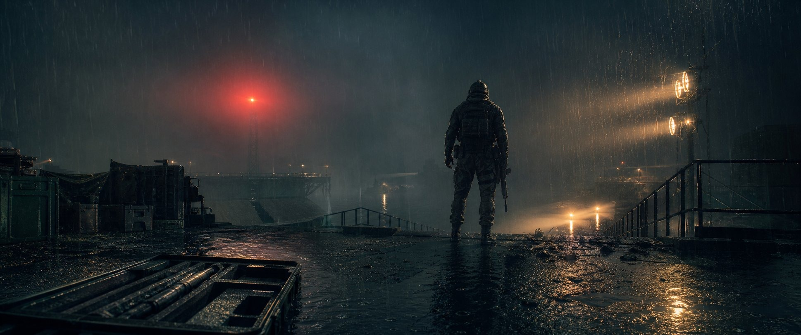

Erreur 404 — Secteur perdu
Ce secteur
n'existe pas
La page que vous cherchez a ete deplacee, renommee, ou n'a jamais existe. Sur Kamona, on appelle ca une extraction ratee. Voici par ou reprendre.

Les sections les plus consultees
Guide du débutant
Premiers pas, modes, extraction, economy.
Loadout Optimizer
Construisez votre kit et calculez son cout.
Tier List des armes
Classement S7 et tier list interactive.
Cartes
Farm, Valley, Northridge, Armory, TV Station, Airport.
Munitions
Penetration, degats de chair, classe d'armure.
Strategies S7
Patience, rat run, timing d'extraction.
Communaute
Reddit, Discord, streamers, patch notes.
Univers de Kamona
Factions, guerre Nord-Sud, Dark Zone.
Vous cherchiez une page precise ?
Utilisez la barre de recherche en haut de page (raccourci / ou Ctrl + K) : elle interroge les 63 pages du guide ainsi que les armes, armures, munitions, objets et cartes. La page Patch notes recense les URL qui ont change depuis la Saison 7.